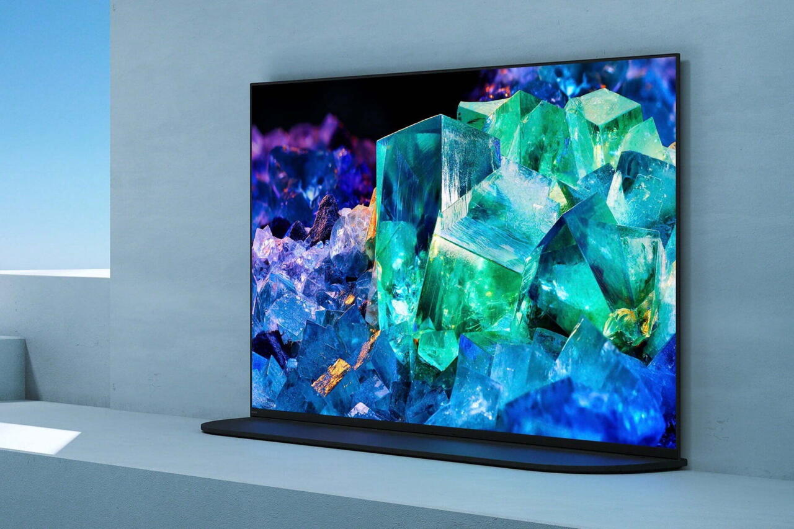

Los nuevos televisores OLED Quantum Dot.

Sony se llevó la primicia en ser la primera compañía en presentar un televisor
OLED con tecnología Quantum Dot, con su nuevo Bravia XR A95K. Se trata de pantallas
que combinan los negros perfectos y el contraste infinito del OLED, con las mejoras
de brillo y color que permite el Quantum Dot. Se los considera un paso intermedio
entre los televisores OLED y los Micro LED que, hoy por hoy, solo comercializa Samsung.
Este televisor vendrá en opciones de 55 y 65 pulgadas, ambas de resolución 4K.
Nuevos procesadores de AMD e Intel.

En la CES, Intel anunció la producción de su procesador KS-Series 12th Gen para computadoras
de escritorio y el lanzamiento de procesadores mobile para laptop para la misma generación.
La compañía promete que estos serán "los procesadores mobile más rápidos en la historia".
Por su parte, AMD también anuncio un procesador para laptop, en este caso el Ryzen 6000, que
incluye RDNA 2, un nuevo procesador de gráficos para su parte de video integrada. La empresa
anunció que la performance para videojuegos será dos veces mejor que en las versiones
anteriores y que la batería podrá durar 24hs.